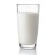

VOLTAR
Bolo de Chocolate
Ingredientes:
Massa:
3 ovos
 1 e 1/2 xícara (chá) de açúcar
1 e 1/2 xícara (chá) de açúcar
 2 xícaras (chá) de farinha de trigo
2 xícaras (chá) de farinha de trigo
 1 xícara (chá) de chocolate em pó ou achocolatado
1 xícara (chá) de chocolate em pó ou achocolatado
1/2 xícara (chá) de óleo
 1 colher (sopa) de fermento em pó
1 colher (sopa) de fermento em pó
 1 pitada de sal
1 pitada de sal
 1 xícara (chá) de água quente
1 xícara (chá) de água quente
Cobertura:

4 colheres (sopa) de leite
1/2 xícara (chá) de chocolate em pó
 1 colher (sopa) de manteiga
1 colher (sopa) de manteiga
1 xícara (chá) de açúcar
Modo de Preparo:
Massa:
1 - Em um liquidificador, bata os ovos, o açúcar, o óleo, o achocolatado e a farinha de trigo.
2 - Despeje a massa em uma tigela e adicione a água quente e o fermento, misturando bem.
3 - Despeje a massa em uma forma untada e asse em forno médio-alto (200° C), preaquecido, por 40 minutos.
4 - Desenforme ainda quente.
Cobertura:
1 - Em uma panela, leve todos os ingredientes ao fogo até levantar fervura.
2 - Despeje ainda quente em cima do bolo.

Olavo Santos
BOM APETITE!
VOLTAR